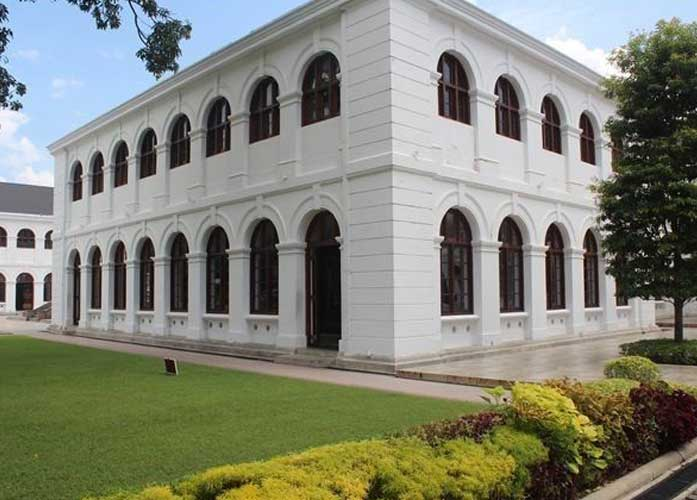
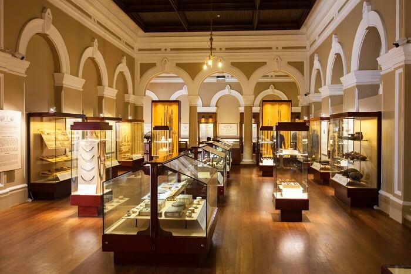
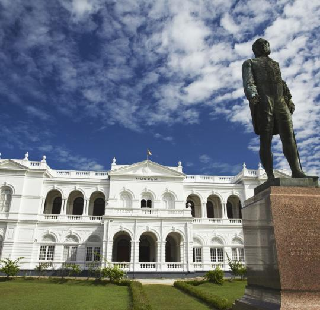
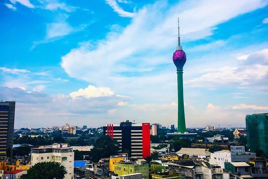

.jpg)
manoj.2019264@iit.ac.lk
The building was constructed in 1889 at a cost of Rs 450,000[2] to serve as the Jawatta Lunatic Asylum (also called the Cinnamon Gardens Asylum).In 1875, the then Governor, Sir William Gregory, based on the recommendations of the Principal Civil Medical Officer,
Dr. W R Kynsey, decided to build a new asylum to replace the existing facility at Borella. Issues over the location and design meant that construction did not commence until 1879, following the intervention of the new Governor, Sir James Longdon. Even then further construction of the building was delayed until 1882.
The building consisted of an entrance block, two patient wings (accommodating 400 patients) connected to the central administration and a boundary wall. Longdon defended the cost of the facility stating at the time, "The asylum is a series of one-storey buildings of the plainest type. The walls are of brick plastered,
because of the climate plastering is found requisite for the preservation of buildings. There is no expensive ornamentation, or indeed any ornament at all, unless a short ungraceful and inexpensive tower over the entrance designed for the clock can be called an ornament. The enclosing walls are of ordinary cabook, such as is universally used for garden walls in Colombo.
"The Jawatta Asylum suffered from overcrowding within years of completion, housing over 500 patients. In 1917 a new larger facility was constructed at Angoda, with all the patients being transferred from Jawatta by 1926.
The building subsequently housed the newly established University College. The building complex was then occupied by the Sri Lanka Broadcasting Corporation (SLBC), the Public Administration Department, Auditor General's Department and later the Government Analyst's Department.
In 2012 the Urban Development Authority commenced the renovation of the buildings and special care was taken to preserve their original architectural features whilst adding modern technological features and amenities.The construction of the mall took approximately 200 soldiers and six months of work to clear the spaces and fully reveal the original structures.
The buildings remain true to the original complex with no additions or alterations. It took nearly two years to fully renovate the structure at a cost of Rs 550 million.The 8,400 m2 (90,000 sq ft) shopping complex was officially opened by the former President Mahinda Rajapaksa on 13 July 2014.
The arcade also houses Sri Lanka's first ever boutique cinema, 'The Empire Cineplex', run by Ceylon Theatres.
Lotus Tower, also referred to as Colombo Lotus Tower, is a tower of 356 m (1,168 ft), located in Colombo, Sri Lanka.
It also reflects the symbolic landmark of Sri Lanka. As of 16 September 2019, the tower is currently the tallest self-supported structure in South Asia.
It is also the second tallest structure in South Asia after the guy-wire-supported INS Kattabomman in India. The tower is also the 11th tallest completed tower in Asia and it is also the 19th tallest tower in the world.
It was first proposed to be built in the suburb of Peliyagoda but later the Government of Sri Lanka decided to shift the location. The lotus-shaped tower will be used for communication,
observation and other leisure facilities, with construction costing $104.3 million, funded by EXIM Bank of People's Republic of China. It is visible throughout Colombo, its suburbs and most major highways radiating from and around the city.
The design of this building is inspired by the Lotus flower. The lotus symbolizes purity within Sri Lankan culture and is also said to symbolize the country's flourishing development.
The tower base is inspired by the lotus throne and will also be formed by two inverted trapezoidal. The tower's color is planned to alternate between pink and light yellow by smooth transition- an effect achieved by coating the glass.
The tower is approximately 350 m (1,150 ft) tall and covers 30,600 m2 (329,000 sq ft) of floor area.
Lotus Tower's main revenue sources will be tourism and antenna leasing. It will function as a radio and television broadcasting antenna ISDB-T and proposed DVB-T2 support structure for 50 television services, 35 FM Radio Stations and 20 telecommunication service providers,
and will house a variety of tourist attractions.
The Colombo Museum as it was called at the beginning was established on 1st January 1877. It founder was Sir William Henry Gregory, the British Governor of Ceylon (Sri Lanka) at the time.
The Royal Asiatic Society (CB) was instrumental in bringing to the notice of Gregory on his appointment as Governor in 1872 the need for a public museum with much difficulty the approval of the legislative council was obtained within a year.
The Architect of the Public Works Department, J.G. Smither was able to prepare the plans for new structure on Italian architectural style. The construction was completed in 1876 and the Museum commenced it functions in the following year.
The Authorities of the museum took various steps to display the cultural and natural heritage of the country for this purpose.
With the development of the museum to international level, it earned the status of a national museum during the period of Dr. P. E. P. Deraniyagala. He was able to open up branch museums in Jaffna, Kandy and Ratnapura and a full - fledged Department
of National Museums was established in 1942 under the act No. 31. The extension of the number of branch museums has now increased to nine and in addition a school science programme and a mobile museum service are also in operation.
This process has further been improved by the arrangement of the galleries of the ground floor in a historical sequence and those of the upper galleries on a thematic basis.